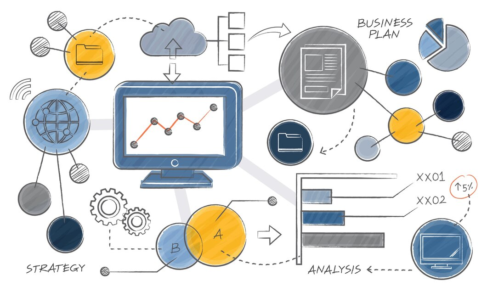

DIFERENCIA ENTRE LOS TIPOS DE RECURSOS
En un proyecto IoT intervienen varios tipos de recursos. ¿Sabes cuáles son?
RECURSOS HUMANOS
RECURSOS MATERIALES
RECURSOS DE SOFTWARE

RECURSOS FINANCIEROS
RECURSOS DE INFRAESTRUCTURA
RECURSOS DOCUMENTALES Y DE CONOCIMIENTO
DEPARTAMENTOS IMPLICADOS EN UN PROYECTO IoT
En el proceso logístico de un proyecto IoT (Internet of Things), diversos departamentos o áreas funcionales son esenciales para gestionar y coordinar las diferentes etapas de la cadena de suministro, desde la adquisición de recursos hasta la entrega final del producto. Los departamentos clave involucrados son:
Departamento de Planificación y Control de la Producción
Sus responsabilidades son:
- Planificación de la Producción: Crear y mantener un plan de producción que coordine las actividades de fabricación y ensamblaje de los dispositivos IoT.
- Control de Inventarios: Monitorear y gestionar los niveles de inventario de componentes y productos terminados.
- Programación de la Producción: Coordinar el calendario de producción para asegurar que los dispositivos se fabriquen según la demanda y los plazos establecidos.
Departamento de Adquisiciones y Compras
Sus responsabilidades son:
- Selección de Proveedores: Identificar y seleccionar proveedores para los componentes electrónicos, hardware y otros materiales necesarios.
- Negociación de Contratos: Negociar términos y precios con los proveedores.
- Gestión de Pedidos: Realizar pedidos de componentes y materiales, y gestionar el suministro.
Departamento de Almacenamiento y Gestión de Inventarios
Sus responsabilidades son:
- Gestión de Almacenes: Supervisar el almacenamiento de componentes y productos terminados, asegurando condiciones adecuadas para la preservación y organización.
- Control de Inventarios: Llevar un registro de los niveles de inventario y realizar auditorías periódicas.
- Logística de Almacenamiento: Implementar prácticas eficientes para la recepción, almacenamiento y despacho de materiales y productos.
Departamento de Transporte y Distribución
Sus responsabilidades son:
- Gestión del Transporte: Planificar y coordinar el transporte de componentes y productos entre proveedores, almacenes y puntos de venta.
- Optimización de Rutas: Diseñar y optimizar rutas de entrega para reducir costos y tiempos de tránsito.
- Coordinación de Entregas: Asegurar la entrega oportuna de productos a clientes o puntos de venta.
Departamento de Gestión de la Cadena de Suministro
Sus responsabilidades son:
- Coordinación de la Cadena de Suministro: Asegurar la integración y coordinación entre todas las etapas de la cadena de suministro.
- Gestión de Relaciones con Proveedores: Mantener relaciones efectivas con proveedores y otros socios logísticos.
- Análisis y Mejora Continua: Evaluar el rendimiento de la cadena de suministro y buscar oportunidades de mejora.
Departamento de Calidad y Control
Sus responsabilidades son:
- Control de Calidad: Inspeccionar y probar los componentes y productos para asegurar que cumplen con los estándares de calidad.
- Gestión de No Conformidades: Manejar productos defectuosos o no conformes, y coordinar la resolución de problemas.
- Cumplimiento Normativo: Asegurar que todos los procesos logísticos cumplan con las normativas y regulaciones aplicables.
Departamento de tecnología de la Información (TI)
Sus responsabilidades son:
- Soporte de Sistemas Logísticos: Implementar y mantener sistemas informáticos para la gestión de inventarios, seguimiento de envíos y análisis de datos logísticos.
- Integración de Tecnología: Asegurar que las tecnologías utilizadas en el proceso logístico estén integradas de manera efectiva con los sistemas IoT.
Departamento de Atención al Cliente
Sus responsabilidades son:
- Gestión de Solicitudes: Manejar consultas y problemas relacionados con la entrega de productos.
- Servicio Postventa: Proporcionar soporte a los clientes después de la venta, incluyendo la gestión de devoluciones y reclamaciones.